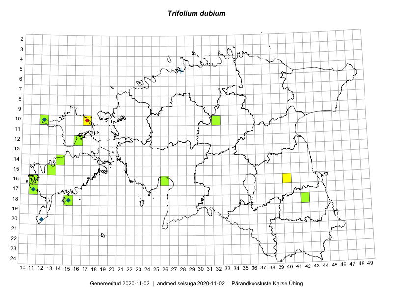

Trifolium dubium — väike ristik
Fabaceae :: Trifolium dubium Sibth. (35); Trifolium filiforme L. (1)

Kaart põhineb 36 kirjel:
vaatlusi 13
herbaareksemplare 23
Taime kaasaegsed ja ajaloolised leiukohad asuvad 13 ruudus.
Tingmärgid ja ruutude arvud periooditi (U1 / V2 )
█ 2006–2020 (11/–)
◆/◇ 1971–2005 (4/1)
○ 1921–1970 (0/0)
+ kuni 1920 (1/0)
× hävinud (–/0)
? kaheldav (–/0)
| Ruut | Leidja(d) | Leiuaeg | Kirje |
|---|---|---|---|
| 16-11 | Mari Reitalu, Triin Reitalu | 2015-05-28 | ruut/ala: Trifolium dubium Sibth. |
| 17-11 | Mari Reitalu, Triin Reitalu | 2015-05-19–2015-05-20 | ruut/ala: Trifolium dubium Sibth. |
| 17-11 | Triin Reitalu, Mari Reitalu | 2015-05-20 | ruut/ala: Trifolium dubium Sibth. |
| 16-11 | Triin Reitalu, Mari Reitalu | 2015-05-28 | ruut/ala: Trifolium dubium Sibth. |
| 16-11 | Triin Reitalu, Mari Reitalu | 2015-05-28 | ruut/ala: Trifolium dubium Sibth. |
| 17-11 | Peedu Saar, Toomas Kukk, Ott Luuk, Thea Kull, Mari Reitalu | 2014-06-28 | ruut/ala: Trifolium dubium Sibth. |
| 17-11 | Peedu Saar, Toomas Kukk, Mari Reitalu, Thea Kull, Ott Luuk | 2014-06-28 | ruut/ala: Trifolium dubium Sibth. |
| 17-11 | Mari Reitalu | 2007-07-05 | ruut/ala: Trifolium dubium Sibth. |
| 16-40 | Meeli Mesipuu | 2017-07-02 | ruut/ala: Trifolium dubium Sibth. |
| 16-40 | Meeli Mesipuu | 2017-07-02 | ruut/ala: Trifolium dubium Sibth. |
| 16-40 | Meeli Mesipuu | 2017-07-02 | ruut/ala: Trifolium dubium Sibth. |
| 17-11 | Toomas Kukk, Tiit Hallikma, Mari Reitalu | 2018-08-29 | ruut/ala: Trifolium dubium Sibth. |
| 10-17 | Kai Rünk | 2008-08-07 | ruut/ala: Trifolium dubium Sibth. |
| 10-12 | Tõnu Ploompuu | 1998-06-18 | TALL C007542: Trifolium dubium Sibth. |
| 10-12 | Tõnu Ploompuu | 1998-06-18 | TALL C007541: Trifolium dubium Sibth. |
| 17-11 | Olev Abner | 2000-06-10 | TALL C007529: Trifolium dubium Sibth. |
| 20-12 | L. Pihlapuu | 1974-06-18 | TU277559: Trifolium dubium Sibth. |
| 05-28 | H. Hiir | 1914-07 | TU277560: Trifolium filiforme L. |
| 16-11 | Peedu Saar | 2015-08-06 | TAA0116294: Trifolium dubium Sibth. |
| 12-16 | Ott Luuk, Toomas Kukk | 2012-07-03 | TAA0116668: Trifolium dubium Sibth. |
| 18-15 | Tõnu Ploompuu | 1993-06-13 | TALL C009943: Trifolium dubium Sibth. |
| 18-15 | Peedu Saar | 2016-08-30 | TAA0133125: Trifolium dubium Sibth. |
| 16-11 | Toomas Kukk, Eerik Leibak | 2015-08-07 | TAA0135576: Trifolium dubium Sibth. |
| 15-13 | Toomas Kukk | 2012-08-20 | TAA0112455: Trifolium dubium Sibth. |
| 14-14 | Ott Luuk, Peedu Saar | 2012-07-14 | TAA0112554: Trifolium dubium Sibth. |
| 12-16 | Toomas Kukk | 2014-05-24 | TAA0113081: Trifolium dubium Sibth. |
| 17-11 | Toomas Kukk | 2014-06-28 | TAA0113392: Trifolium dubium Sibth. |
| 17-11 | Triin Reitalu, Mari Reitalu | 2015-05-20 | TAA0140161: Trifolium dubium Sibth. |
| 16-11 | Triin Reitalu, Mari Reitalu | 2015-05-28 | TAA0140162: Trifolium dubium Sibth. |
| 12-16 | Toomas Kukk, Indrek Tammekänd | 2017-09-11 | TAA0141871: Trifolium dubium Sibth. |
| 17-11 | Mari Reitalu | 2007-06-04 | TAA0143126: Trifolium dubium Sibth. |
| 17-11 | Mari Reitalu | 2014-06-25 | TAA0143127: Trifolium dubium Sibth. |
| 17-11 | Mari Reitalu | 2005-06-15 | TAA0143191: Trifolium dubium Sibth. |
| 16-26 | Maret Gerz, Aat Sarv | 2016-07-04 | TAA0134620: Trifolium dubium Sibth. |
| 10-12 | Ott Luuk, Peedu Saar | 2017-07-01 | TAA0142918: Trifolium dubium Sibth. |
| 18-42 | Thea Kull | 2019-06-07 | TAA0148067: Trifolium dubium Sibth. |
Ruutude arv uue atlase andmekogu järgi. Muuhulgas arvestab vanemat herbaariumi, 2005. aasta atlase välitöölehtedelt uuesti digitaliseeritud andmeid jne. Uue atlase andmekogust pärinevad andmed on kaardile kantud siniste sümbolitega.↩︎
Ruutude arv 2005. aasta atlase (Kukk, T., Kull, T., Eesti taimede levikuatlas. Eesti Maaülikool, Põllumajandus- ja Keskkonnainstituut, Tartu, 2005) järgi. Andmeallikana on kasutatud levik.exe programmi, kus igas ruudus on registreeritud vaid uusim leid. Seetõttu on vanemate perioodide kohta andmed puudulikud. Kasutatud levik.exe andmestikus leidub mõningaid kõrvalekaldeid atlase trükis ilmunud versioonist, sagedamini tarnade ja käpaliste seas. Lisaks leidub selles andmestikus valik liike (peamiselt väheste leidudega tulnuktaimed), mille kaarte trükis ei avaldatud. Vana atlase andmed ruutudest, milles ei ole uue atlase andmekogus leide enne 2006. aastat, on kaardil esitatud punaste sümbolitega. Vana atlase andmetel hävinud ja kaheldavaid leiukohti pole hilisemate (taas)leidude põhjal korrigeeritud.↩︎